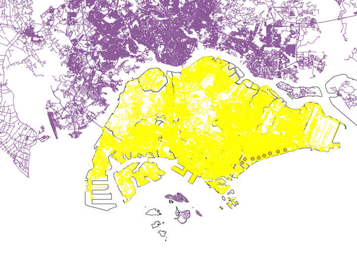
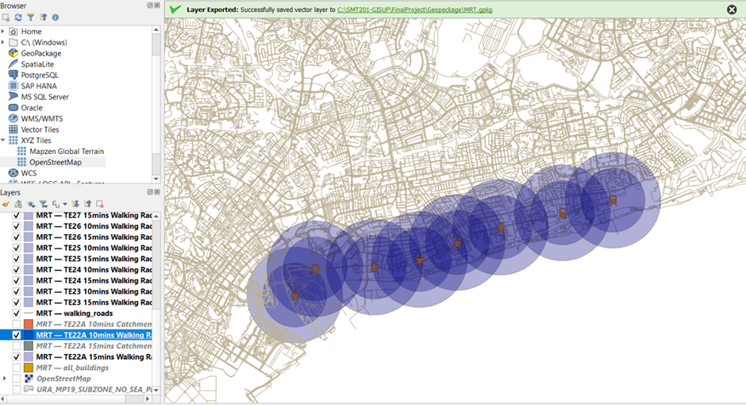

Methodology
In summary, our group created a network analysis near every station by setting 10 and 15 minutes buffer distances and Iso-Areas Polygons. On average, a person could cover about one mile (1.6km) in 20 minutes. We used 10 and 15 minutes as a maximum span of time that a person is willing to cover to walk to an MRT Station from his or her home, which would equate to about 0.8 and 1.2km respectively. The resulting layers will be used for our analysis of the MRT stations’ catchment areas.
Data Preparation and Cleaning
Selection of Required Data
The Datasets that are being used for the project includes:
https://data.gov.sg/dataset/master-plan-2019-subzone-boundary-no-sea contains the subzone of Singapore where we use it to outline the area of Singapore.
https://download.geofabrik.de/asia/malaysia-singapore-brunei.html Singapore, Malaysia and Brunei OSM Data. Data was downloaded as a whole but only the Singapore roads and buildings layer were kept.
https://datamall.lta.gov.sg/content/dam/datamall/datasets/Geospatial/TrainStation.zip Data points of the MRT stations.
TE Stage 4 MRT Stations.csv Using coordinates found from Google Maps, we created a CSV file for the Stage 4 MRT stations with their individual latitude and longitude points.
Adding of Datasets
TE Stage 4 MRT Stations
First go to ‘Add Layer’, then ‘Add Delimited Text Layer’.
Select the TE Stage 4 MRT Stations.csv CSV file. Under the X and Y field, select Longitude and Latitude respectively. Leave Geometry CRS as WGS 84.
The following points should appear as below.
Save the layer as GeoPackage and name the layer Stage4_TE_Line, and the CRS as EPSG:3414 – SVY21.
MP19 Subzone Layer
Add in the MP19 Subzone kml layer.
OSM layer
Add the OSM road layer in. Use ‘Select by polygon’ and select the area outlined by the MP19 Subzone layer, leaving out some of the SOuthern Islands, Pulau Ubin and Pulau Tekong.

Export and Save Selected Features as GeoPackage. Name the layer as all_roads.
Repeat the steps for OSM buildings layer and name it as all_buildings.
Remove the OSM buildigns and roads layer.
Other MRT lines
Add the MRTLRTStnPtt.shp file into the layers. There are many different lines but the ones closest to the Stage 4 Thomson-East Coast Line are Circle Line, Downtown Line, and the East-West Line.
Open the attribute table of the shape file and click ‘Select by Expression’.
Select by STN_NO with the letter ‘CC’ in it.

Save the selected features and name the layer Circle Line.
Do the same for the Downtown and East-West Line, replacing the ‘CC%’ with ‘DT%’ and ‘EW%’ and name the layers Downtown Line and East-West Line respectively.
Cleaning Road Data
There are expressways where the people are not able to walk on. Thus, we have to filter out the following roads with these fclass: motorway, motorway_link, trunk, trunk_link.
Select all_roads layer and open attribute table, click on select by expression.
Select the roads with fclass: ‘motorway’, ‘motorway_link’, ‘trunk’, ‘trunk_link’.
Select ‘Invert Selection’ to select all the roads without the ones needed to be filtered away. Export and save selected features in GeoPackage and name the layer as walking_roads.
Cleaning Buildings Data
The all_buildings layer consists of several null values under the “type” column. After looking at Google Maps, there consists of different types of low-rise buildings, shophouses, etc. Thus, the team decided to replace the null values for “type” column with low-rise buildings.
Right-click on all_buildings layer and select Open Attribute Table. Click on Select by Expression. Type in “type” is null in the expression box. Click on Select Features. This will select all building types that have null values.
After selecting features, Open field calculator and update the values to ‘low-rise buildings’.
Click on the pencil icon to save the edits.
Preparation of Buffers and Iso-Area Polygons
Objective: Creation of Buffer and Iso-Areas with these data
Creating a 15min Buffer Area
Select the first station of Stage 4 Thomson-East Coast Line (Founders’ Memorial).
Go to Vector –> Select Geoprocessing Tools –> Buffer.
Check ‘Selected Features only’
Distance – 0.75 miles (average walking distance of 15min)
Segments – 100
If done correctly, this should be shown:

Save the temporary layer ‘Buffer’ that was generated to GeoPackage, with the layer name as TE22A 15mins Walking Radius.
Creating a 10min Buffer Area
Using the same steps, the only difference is changing the distance to 0.5miles (average walking distance of 10mins).
If done correctly, this should be shown:
Creating a 15min Iso-Area as Polygon
Using a plugin, QNEAT3, under Iso-Areas, select Iso-Area as Polygons (from Layer).
Under Vector layer, select walking_roads layer.
Under Start Points, select Stage4_TE_line, check selected features only Change Unique point ID Field to STN_NAME.
Under Size of Iso-Area and Contour Interval, input 900 (15 mins = 900 seconds).
Change path type to calculate to Fastest Path (time optimisation).
If done correctly, this should be shown:
Save the polygon layer into the GeoPackage, naming the layer and remove the interpolation layer.
Creating a 10min Iso-Area as Polygon
Using the same steps, the only changes that needs to be made is:
Under Size of Iso-Area and Contour Interval, input 600 (10 mins = 600 seconds).
If done correctly, this should be shown:
Catchment area Buildings – We will be looking at what buildings are there in the catchment area.
For 15min Catchment Area, select Clip under Geoprocessing Tools.

Under Input Layer, select all_buildings layer
Under Overlay layer, select TE22A 15mins Catchment Area layer
If done correctly, the following temporary ‘Clipped’ should appear and look like this:
Save the ‘Clipped’ temporary layer as TE22A 15mins Buildings to the GeoPackage.
For 10min Catchment Area, repeat the same steps but replacing the Overlay layer with TE22A 10mins Catchment Area, and save to GeoPackage as TE22A 10mins Buildings.
If done correctly, this should be shown: (With the 10mins layer active only)
Repeat the Steps for Buffer, Iso-Area Polygon and Catchment area buildings for the rest of the Stage 4 Thomson-East Coast Line.
Creating Symbols and /or Area Colour
For point Data (Symbols)
We will need to use symbols to represent the various point layers for easier visualisation.
Firstly, we will save each station individually into the GeoPackage.
Using TE22A station, select the feature and Save Selected Feature as GeoPackage. Name the layer Founders’ Memorial MRT.
Right Click on Layer –> click on Properties. A pop up ‘Layer Properties’ will appear.
Click on Symbology –> Simple Marker –> Change the Symbol layer type to SVG Marker –> Search for ‘train’ at the search bar under SVG images –> double-click on the icon
Repeat the steps above for the other Stage 4 Thomson-East Coast Line stations.
For Circle Line, Downtown Line and East-West Line, without the need to save each station individually, repeat the above steps but with the following colours:
Circle Line – #ffbf00
Downtown Line – #0009be
East-West Line – #00d644
If done correctly, this should be shown:
For Buffer Layer
We will be using a standardised colour across all 10min and 15min Buffer Layers. In addition, the transparency will be lower for clearer visibility of the catchment area.
Using TE22A 15mins Walking Radius, right click on select Properties. Click on Symbology –> Change fill colour to #000080 –> Change Opacity to 30% –> Save Symbol and name it as a Buffer layer –> it should appear in Project Styles for east access.
If done correctly, this should be shown:
Repeat the steps for all 10min and 15min Walking Radius (Use the Saved Symbol in Project styles for easy access).
If done correctly, this should be shown:

For Iso-Area Polygon
Using TE22A 15mins Catchment Area, right click and select Properties –> Click on Symbology –> Change fill colour to #ffdf53 –> Change Opacity to 70% –> Save Symbol and name it as Iso-Area layer –> it should appear in Project Styles for easy access.
If done correctly, this should be shown:
Repeat the steps while using the Iso-Area in Project styles for the rest of the 10mins and 15mins Catchment Area.
If done correctly, this should be shown:
For the buildings in Catchment Area
We will categorise the buildings based on its attribute ‘type’. We will also be standardising each colour for each type based on the following colours:
Building Type Colour Code apartments #477bce church #e1de21 commercial #beb956 construction #45e1c4 garage #6c6c6c house #9cf046 kindergarten #a27a50 low-rise building #0101ff mosque #55b987 public #42ce81 residential #4a2b84 roof #ea58ca school #ff3355 temple #c3154c terrace #6c8341 retail #9200f4 hut #501dcf office #ff85ed EiS-Residences #01f7ff service #d44f3b Using TE22A 15mins Building Layer, Right Click and Select Properties –> Select Symbology –> save the symbols for the type of buildings. Below is an example for apartments:
****** Blur IMAGE ******
Do the same for the other categories of buildings.
If done correctly, this should show in your Project Styles:
With the saved symbols, now select categorised symbols in the drop-down box at the top –> Under Value, select ‘type’ –> Click Classify –> Change the colours according to the saved symbols –> remove all other values.
Repeat the steps for all the stations’ catchment area buildings.
If done correctly, this should show:
Thickness of roads
For ease of visibility, we will decrease the walking_roads layer thickness to 0.2mm and change the colour to black.
Piecing the layers together
After we have completed the standardisation and changing of the symbology and colours, we will now piece the layers together. Our analysis will be based on each Catchment Area based on 10mins or 15mins walking time.
Using TE22A 15mins, activate and place the layers in the following order: the MRT stations and lines, walking_roads, TE22A 15mins Buildings, TE22A 15mins Catchment Area, TE22A 15mins Walking Radius, and Open Street Map, as show in the Layers Panel in the image below:
Right click on the Walking radius and click Zoom to Layer. Create a new Print Layout –> Add Map and Legends –> Save as Image.
If done correctly, it should look similar to the screenshot below:
Repeat the above steps for each station’s 10mins and 15mins layers as our analysis will be based on each station’s 10mins and 15mins Catchment Areas.